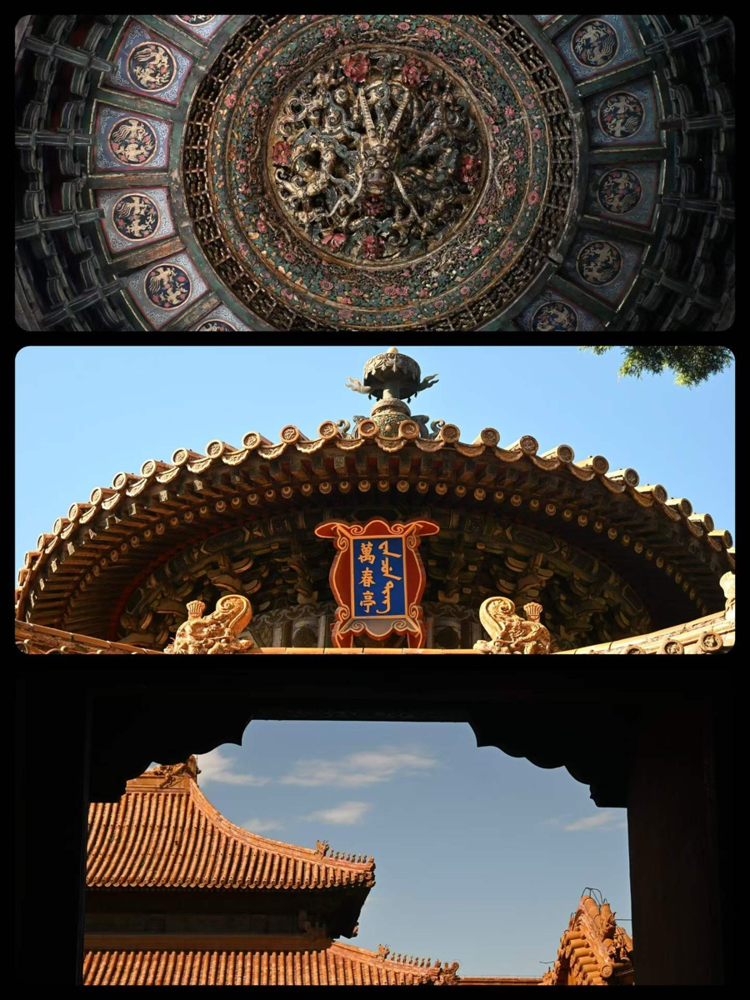

启真问学项目 · 国创
核心成员2024.04 — 2025.05
共同富裕经济政策研究 × AIGC 科普短片：Midjourney 出图、Runway 动图、剪映剪辑，把历史经济政策做成大众看得懂的内容。
国际经济与贸易 · 经济学院
金融学 · 数字金融方向 · 经济学院
将周期性问数需求转化为可被 Workflow Agent 消费的自动化建流指令，降低重复提问成本。
支撑 Base AI 从单一能力调用升级为多任务编排，把自然语言指令转化为可执行的 Agent/Tool 调度路径。
2024.04 — 2025.05
共同富裕经济政策研究 × AIGC 科普短片：Midjourney 出图、Runway 动图、剪映剪辑，把历史经济政策做成大众看得懂的内容。
2024.03 — 2025.05
数字基础设施、数字化赋能与外贸高质量发展——基于浙江省中小企业的实证研究。
2024.11 — 2024.12
支付宝校园版「校园活动实时通」：AI 助手打破活动信息差、智能规划日程。负责产品构思、PRD、低保真与交互设计。
2024.02 — 2024.03
安恒信息企业分析：网络安全领军企业的技术战略拆解，负责案例甄选、资料整合与文档撰写。
2023.09 — 2023.11
金融科技在乡村振兴中的应用模式与效果分析：农村电商数据采集 + 政策研究 + 研究报告。
2023.03 — 2023.05
「就耀不一 YOUNG」：面向年轻消费群体的品牌营销方案，负责主题方向、品牌与市场分析。
▸ HOVER 解锁原图

动感的音乐唤醒身体，治愈的音乐抚慰灵魂；听不同语言、不同风格、不同意义的音乐。
福州话是走出福建才发现的「加密通话」；英语是老朋友，法语是二外（TFU-4），韩语正在多邻国连胜中。
「世界上有多少人，就有多少种语言。」——《爱情怎么翻译》
一台小尼康，风景为主，偶尔人像，不打鸟。Solo 或者结伴都可以，人生漫漫，不着急。
身体和心灵，总有一个要在路上。